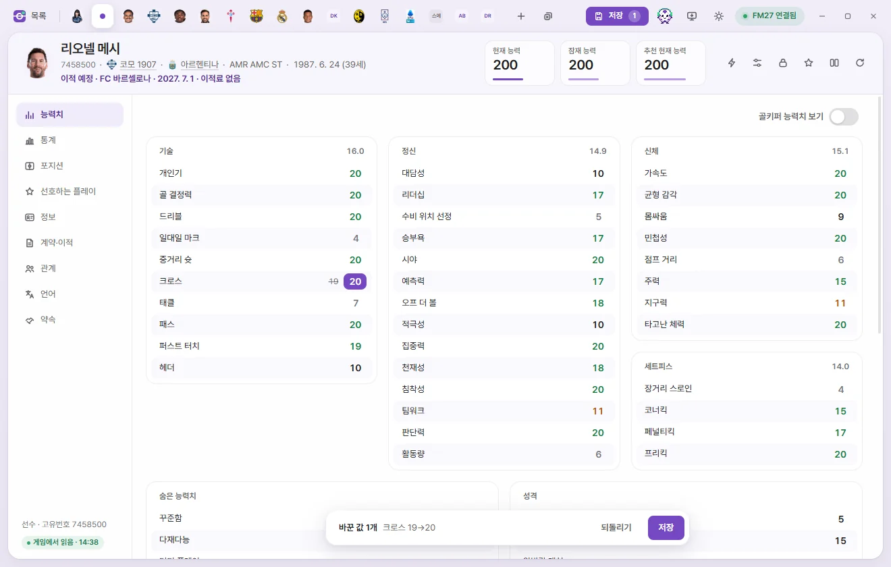
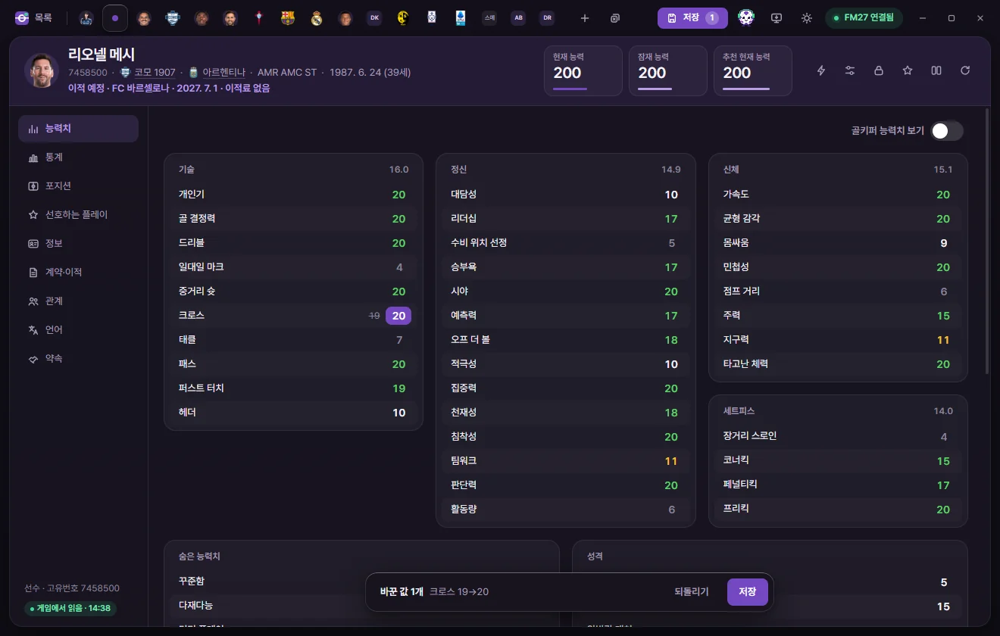

Getting started
Getting started
Follow step by step from installing FMAX and connecting to FM27 to editing a player's value and saving it into the game.
What you need
- Windows 10 or 11 (64-bit)
- Football Manager 27 (FM27) version 27.0.1+2503222. FMAX won't connect if your game version is different.
- Before making your first edits, it's a good idea to back up a copy of your save. Once you save your game in FM, edited values remain in the save file.
1. Install FMAX
- Download
FMAX-setup.exefrom getfmax.com. - Run the file—it downloads the latest version and opens the setup wizard. Click Next → Install → Finish.
- FMAX is added to your Start menu.
For details on the blue "Windows protected your PC" prompt, whether administrator rights are needed, and more, see Installing, updating and uninstalling.
2. Launch FM27 and load a save
Open FM27 and load a save as usual. FMAX reads and writes data in whichever save is currently open in the game, whether it's a new game or an ongoing career.
You can also open FMAX first. Once you launch FM27 and load a save, FMAX connects automatically.
3. Open FMAX and check the connection
Launch FMAX from the Start menu or your desktop. A startup screen appears first and checks off three stages in order.
| Stage | What happens |
|---|---|
| Preparing FMAX | FMAX sets up the interface. |
| Finding game | Looks for a running copy of FM27. Once found, this changes to 'Find game · FM27 connected'. |
| Reading game | Reads every list from the game for the first time, showing progress as a percentage. |
Once reading finishes, the startup screen closes and the list screen opens. If it takes a while, click Continue without waiting at the bottom to head straight in while reading finishes in the background.
If FM27 isn't running or you haven't loaded a save yet, the startup screen lets you know and moves on to the list screen after a moment. Leave FMAX open and load your save in the game.
Reading the connection badge
The pill badge in the top-right corner of the window shows your live connection status. A green dot with FM27 connected means everything is ready.
| Badge | Meaning | What to do |
|---|---|---|
| Checking | Looking for the game. | Wait a moment. |
| FM27 closed | FM27 is not running. | Launch the game and load a save—FMAX connects automatically. |
| FM27 starting | The game is still starting up. | FMAX connects automatically once the main menu loads. |
| Waiting for save | No save loaded yet. | Load a save and FMAX reads it automatically. |
| Reading | Reading game data for the first time. | Once finished, lists and tabs open right away with no wait. |
| FM27 connected | Connected to FM27. | You're ready to read and edit values. |
| Version mismatch | Unsupported game version. | See Troubleshooting. |
| No access | Can’t open the game. | If you ran FM27 as administrator, run FMAX as administrator too. |
| Error | Something went wrong while reading the game. | Wait a moment and try again. |
Click the badge to open the Connection status popup.

- Current save: The save currently open in the game.
- Game version: The FM27 build FMAX is able to read.
- Player, Staff, Club …: How many items were read for each type and when.
- Writing: Shows 'Only if read values haven’t changed' when connected. FMAX only writes when the in-game value still matches what FMAX read on screen.
- Reload from game (when connected) / Check again (when disconnected): Re-reads data from the game, or looks for the game again.
- Developer log — Save log · Copy: Diagnostic log to send to the developer if something goes wrong. See Troubleshooting.
4. Open a player from the list

- Under Game data on the left, click Player. The number next to each category is how many items were read from the game.
- Type a player's name into the search box at the top.
- Click the player's row in the list. A tab for that player appears across the top and opens their edit screen.
Clicking the checkbox at the left of a row selects the player without opening a tab. To select and edit multiple people at once, see Using lists.
5. Edit a value

- Select Attributes on the left side of the tab.
- Click the attribute you want to change (for example, Crossing). −, the number, and + appear in place of the value.
- Change the number:
- Click − / +, or type a number directly.
- Press ↑ ↓ or scroll the mouse wheel to step by 1. Hold Shift for larger steps (5 at a time for attributes).
- Press Enter or click elsewhere to confirm. Esc cancels the edit you just made, and Tab confirms and moves to the next field.
Edited fields show the original value in small text beside the new one. At the bottom of the tab, an N changes bar appears, previewing the first two edits such as 'Crossing 19→20'.
The 'internal' number shown while editing an attribute is the finer-grained value the game stores behind the 1–20 rating on screen. If you set the attribute back to its original rating, FMAX preserves the game's original fine-grained value.



6. Save to the game
There are two Save buttons:
| Button | Location | What it writes |
|---|---|---|
| Save | Bottom changes bar of the active tab | Writes only the edits made on this tab to the game. |
| Save N (Save all) | Top-right of the window | Writes edits across every open tab, one tab after another. N is the total number of edited values. Ctrl+S does the same. |
The top Save N button only appears when you have unsaved edits. Pressing Ctrl+S when nothing has changed lets you know there's nothing to save.
When you click Save, FMAX:
- Checks that the current value in the game still matches what FMAX originally read.
- Writes the new value if it matches.
- Reads the value back again to confirm the change took hold.
When done, you'll see 'Wrote N values to the game · Re-read and verified' (or 'Saved N values to the game · N tabs' when saving all). If any tab couldn't be written, FMAX tells you which tabs still have unsaved changes.
If the game changed that same value in the meantime, FMAX won't overwrite it. Instead, FMAX reloads the tab from the game and leaves your pending edit in place so you can review it and save again. For other reasons a save might fail, see Troubleshooting.
When the Save button is disabled
| Button label | Meaning |
|---|---|
| Apply once connected | FMAX isn't connected to the game, or this tab's data wasn't read from the currently running session. Once connected, click Reload from game (the circular arrow) in the tab header to enable saving. |
| Save (dimmed) | FMAX is currently reading or writing something else. It will become clickable again in a moment. |
| No game | Not connected to the game. |
Reverting before you save
Click Revert on the bottom bar of a tab to discard every unsaved edit on that tab. Only changes not yet written to the game are reverted—if you've already saved a value, edit it back to the original number and click Save again.
Keeping changes in your save file
Values written by FMAX go into your live game session right away, but you still need to save your game inside FM to store them in your save file on disk. If you reload your save without saving in FM first, your edits will be gone.
For a breakdown of which changes show up immediately and which take effect when the in-game date advances, see When changes take effect in the game.
What to read next
- Around the screen: What every part of the window is called and what it does
- Using lists: Searching, filtering, choosing columns and multi-selecting
- Player: Every field on the Player tab
- Game editor (⚡): Instant actions like transfers, loans and Remove injuries
- Live tweaks: Ongoing rules that stay active while FMAX is open
- Keyboard shortcuts